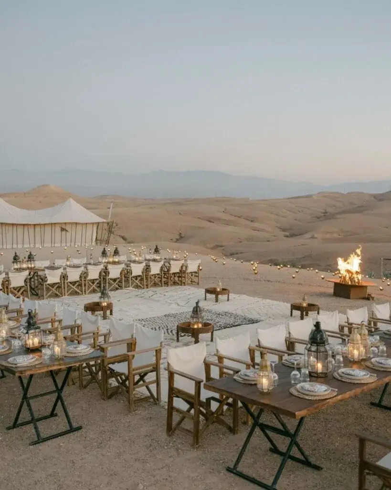

Dreaming of an intimate wedding abroad? Discover eloping in Morocco: breathtaking landscapes, local traditions and advice for planning your magical union.
Getting married is already a unique moment in life, but experiencing it far from the bustle and constraints of a big wedding turns the day into a true adventure. That is exactly what an elopement in Morocco offers. An intimate wedding, with a few loved ones or simply the two of you, in a dreamlike setting that blends authenticity, magic and culture.
Imagine: a ceremony facing the dunes of the Agafay desert, dinner under the stars in a Marrakech riad, or a declaration of love on the beach at Essaouira. Morocco is winning over more and more couples looking for an intimate wedding abroad, offering the perfect combination of spectacular landscapes, local traditions and flexible organisation.
Elopement: a new way to get married

An elopement isn't just a "scaled-down" wedding. It is about reinventing the wedding around what matters: the two of you, your story, your emotions. No more long guest lists and endless constraints. This kind of wedding puts the emphasis on spontaneity and authenticity.
Choosing an elopement in Morocco means choosing freedom. Every detail can be personalised, every moment fully lived without stress. Morocco offers this flexibility while guaranteeing a sumptuous setting, perfect for capturing the day in photographs and videos worthy of a film.
Why choose Morocco for your elopement?
Morocco combines everything couples look for in a wedding abroad: proximity to Europe, a diversity of landscapes and cultural richness. A few hours' flight from France or Spain, you find yourself in a world where every street corner, every dune and every palace breathes magic.
The contrasts are striking. In the north, majestic mountains offer an incredible natural setting for an intimate wedding. In Marrakech, hidden riads and lush gardens create a romantic, refined atmosphere. On the Atlantic coast, Essaouira charms with its colourful alleys and windswept beaches. And the desert, whether Agafay or the Sahara, offers breathtaking panoramas, ideal for unique photos and videos.
But beyond the landscapes, it is the welcome and warmth of the people that make the difference. Couples who choose an elopement in Morocco appreciate the hospitality and kindness of local suppliers, from artisans to wedding planners specialising in weddings abroad.


Dream venues for an intimate wedding
Getting married in Morocco means being spoilt for choice. In Marrakech, riads offer a unique blend of luxury and authenticity. Imagine a ceremony in a flower-filled patio, with hanging lanterns and a gentle scent of orange blossom in the air. The colourful medinas offer a romantic urban backdrop, perfect for dynamic, lively photos.
If you dream of a wilder setting, the Agafay desert is perfect for an intimate wedding in Morocco. Golden dunes, endless skies and absolute calm allow total immersion in your story. The sunset creates an unreal atmosphere, where every emotion is amplified and every glance becomes memorable.
For sea lovers, Essaouira charms with its windswept beaches and bohemian alleys. And for those who want to combine nature and intimacy, the Atlas Mountains offer majestic panoramas, perfect for a minimalist yet elegant wedding.
Between tradition and modernity
One of the great advantages of an elopement in Morocco is the chance to mix modernity and tradition. You can choose a Western-style symbolic ceremony or add a few local touches to enrich your experience. Kaftans, henna for the bride or a musical entrance in the style of a zaffa are all details that add precious authenticity to your wedding.
Moroccan cuisine is another highlight. An intimate dinner can become a memorable gastronomic experience with pastilla, tagine, mechoui and local pastries. These authentic touches make your wedding unique while respecting your personal vision of the elopement.
The practical side of eloping in Morocco
Even an intimate wedding needs a minimum of organisation. Calling on a wedding planner in Morocco who specialises in elopements lets you fully enjoy your day without stress. The planner's role: choosing the venue, coordinating suppliers, managing logistics and sometimes even attending the ceremony to make sure everything runs perfectly.
For most couples, an elopement in Morocco is symbolic. The legal formalities can be completed in your home country, which greatly simplifies the process. It is best to choose the right season to enjoy ideal weather, usually between April and June or September and October, to avoid the extreme summer heat or the winter rains.
Photographers and videographers who specialise in elopements become your indispensable allies. With them, every moment, from getting ready to sunset, is captured with naturalness and emotion.
The unique experience of an elopement
Far from the logistics of a traditional wedding, an elopement in Morocco becomes a true adventure. You walk hand in hand through the souks of Marrakech, breathe the fresh desert air, share mint tea with your loved ones in a riad, or enjoy the absolute silence of the dunes. Every moment becomes precious, every glance is captured in its spontaneity.
That is what makes this kind of wedding so different. It isn't just a ceremony, but a journey, a moment out of time. The memories you bring back, whether in photos, videos or simply in your mind, have an unrivalled intensity.
Tips for a successful elopement in Morocco
For your intimate wedding to go perfectly, a few tips are essential. First, define the atmosphere you want: bohemian, chic, minimalist or traditional. Then choose suppliers experienced in elopements abroad: photographer, videographer, decorator and wedding planner.
It is also crucial to plan the logistics in advance: transport, accommodation, weather and perhaps a small group of guests. Even though an elopement is intimate, preparing every detail lets you fully enjoy the day without surprises. Finally, let yourself be carried by the moment and enjoy every emotion, because that is exactly what makes a wedding in Morocco unforgettable.

In short
An elopement in Morocco isn't just an intimate wedding abroad; it is a unique experience. Between breathtaking landscapes, Moroccan traditions and total freedom of organisation, every couple can create a made-to-measure wedding that is deeply personal and magical.
Choosing Morocco means choosing adventure, beauty and authenticity. Whether in a riad in Marrakech, facing the Agafay desert, on the beach at Essaouira or in the Atlas Mountains, your wedding becomes a memory etched forever, rich in emotion and magic.
So if you dream of an intimate wedding in Morocco, let yourself be carried away by this destination that combines intimacy, adventure and elegance, and make your elopement a unique, unforgettable moment.
Lovely Day Event offers several services
Wedding planning
I step in at every stage of your preparations and guide you through your choices, bringing ideas and suggestions so that your wedding looks like no one but you.
Wedding design
Creative and passionate, I am a certified Wedding Designer and I create a scenographic atmosphere that matches the theme of your wedding.
On-the-day coordination
I will be the conductor of your day, managing the suppliers, the set-up of your decor and the smooth running of this beautiful day.